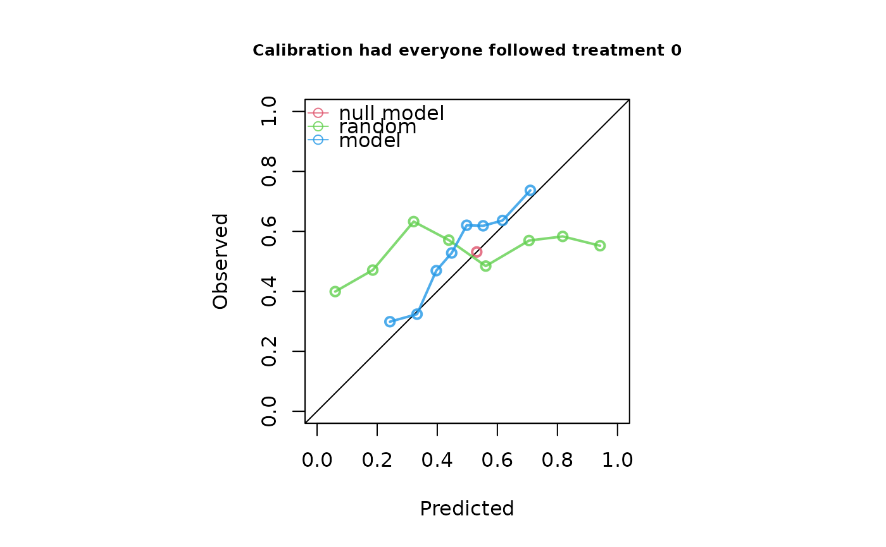
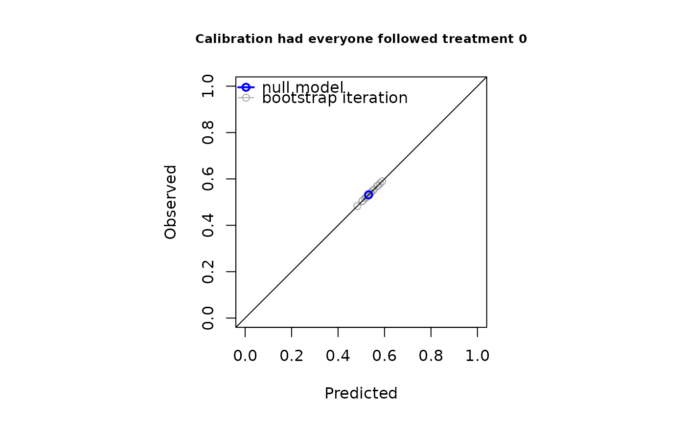
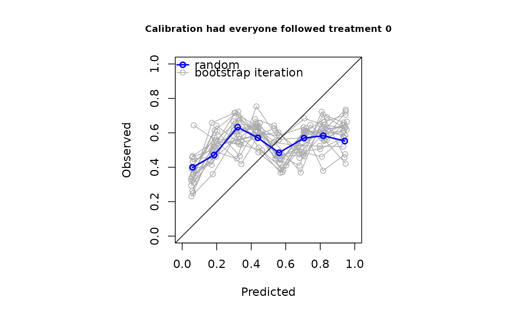
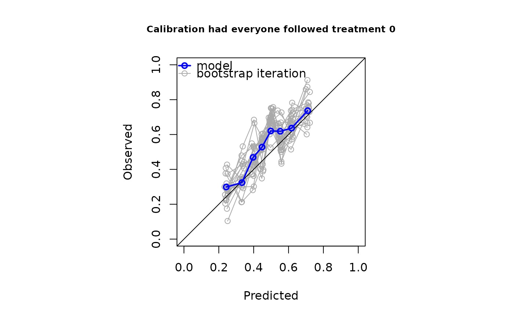

Produces a calibration plot comparing predicted and observed outcome risks under the intervention of interest.
Arguments
- x
The `ip_score` object returned by
ip_scoreorip_score_long- xlim
The x limits of the plot, c(x1, x2)
- ylim
The y limits of the plot, c(x1, x2)
- pty
A character specifying the type of plot region to be used; "s" generates a square plotting region and "m" generates the maximal plotting region.
- asp
The y/x aspect ratio
- main
Character string giving the main title of the plot.
- sub
Character string giving the subtitle of the plot.
- xlab
Character string specifying the x-axis label.
- ylab
Character string specifying the y-axis label.
- cex.main
Numeric value controlling the size of the main title.
- cex.sub
Numeric value controlling the size of the subtitle.
- legend
Keyword denoting the positioning of the legend. Can be "bottomright", "bottom", "bottomleft", "left", "topleft", "top", "topright", "right" and "center", or alternatively, "disable" to hide the legend.
- ...
Currently ignored.
Details
If ip_score or ip_score_long was run with
bootstrap resampling (`bootstrap > 0`), additional panels are produced for
every evaluated model showing the calibration curve from each bootstrap
replicate.
The observed and predicted calibration knots used to construct the plots are stored in `x$score$calplot`, where `x` is the `ip_score` object.
This method is available only when "calplot" was included in the
`metrics` argument of ip_score or ip_score_long.
Examples
n <- 1000
data <- data.frame(L = rnorm(n), P = rnorm(n))
data$A <- rbinom(n, 1, plogis(data$L))
data$Y <- rbinom(n, 1, plogis(0.1 + 0.5*data$L + 0.7*data$P - 2*data$A))
random <- runif(n, 0, 1)
model <- glm(Y ~ A + P, data = data, family = "binomial")
score <- ip_score(
object = list(random, model),
data = data,
outcome = Y,
treatment_formula = A ~ L,
treatment_of_interest = 0,
bootstrap = 20,
bootstrap_progress = FALSE,
metrics = "calplot"
)
plot(score)



